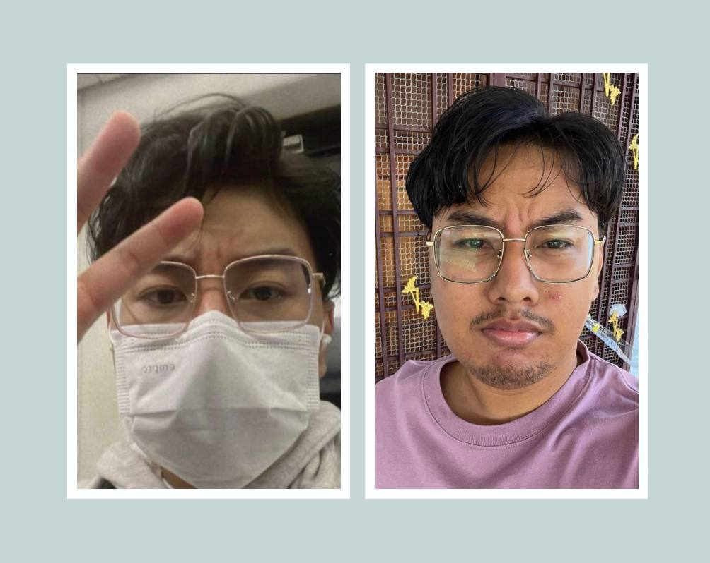
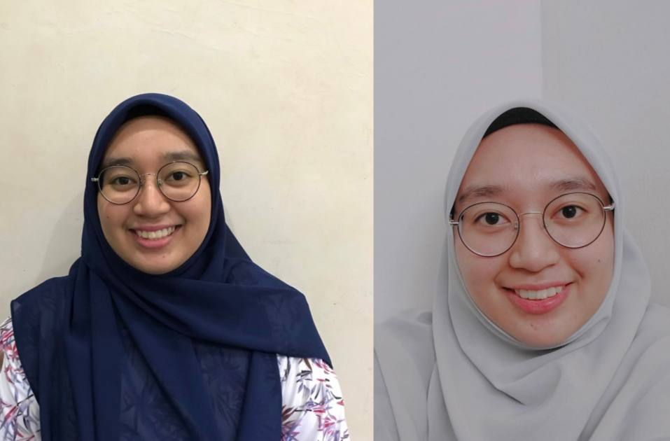
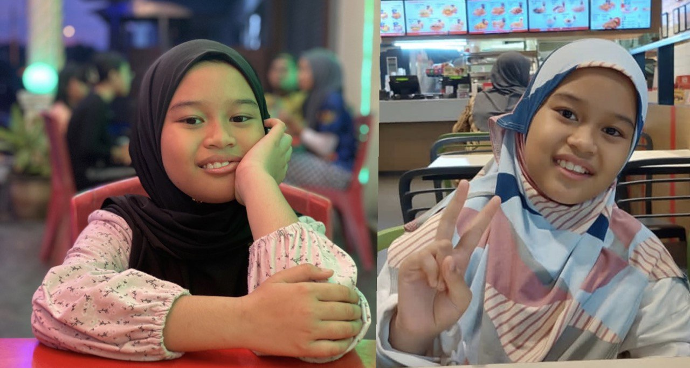

Welcome to the Family Section
My family is an essential part of who I am and has shaped my journey in profound ways. They've been my support system, my inspiration, and my source of love and encouragement throughout my life.
My Parents

My father's name is Amir Abidin bin Abdul Majid. He is 59 years old and works as a welder. My mother, Norhanita binti Tuah, is 52 years old and is a homemaker. I cherish them dearly.
My Brother

My brother's name is Al-Luqman Aidil bin Amir Abidin. He is 25 years old and works as a manager at Tealive. He studied culinary arts at Kolej Komuniti Kuala Kangsar.
My Sister

My sister, An Nuur Najihah binti Amir Abidin, is 23 years old and graduated in Electrical Engineering from Politeknik Ungku Omar, Ipoh, Perak.
My Little Sister

My little sister, An Nuur Wafiah binti Amir Abidin, is 10 years old and enjoys her studies at Sekolah Rendah Kebangsaan Gopeng Taman Gopeng Baru.